首页 > 编程笔记
什么是电感（非常详细）
电感元件简称电感，其图形符号可以表示为图 1a) 所示。
在理想情况下，一般认为电感具有以下特性：在没有非线性导磁物质存在的条件下，一个载流线圈的磁通链 Ψ（或磁通 ϕ ）与线圈中的电流 I 成正比，即：
式中，N 为电感元件绕制的线圈匝数；L 为电感元件的参数，称为电感元件的电感值。由于单个线圈中磁通链是由线圈本身的电流产生的。因此电感值也称自感系数，单位为 H（亨利，简称亨）。在实际应用中常用单位是 mH（毫亨）、μH（微亨）和 nH（纳亨）。以 Ψ 和 I 作为坐标轴可以画出电感的韦安曲线，如图 1b) 所示，线性电感的韦安曲线是过原点的直线。
由于在实际应用中，磁通链是很难测量的，因此需要确定电感两端电压与电流的关系。由电磁感应定律可知，电与磁之间是可以相互转换的。当磁通链 Ψ 随时间变化时，在线圈的端子间会产生感应电压，其关系为：
结合上面两个公式可得，线圈两端电压与流过电流之间的关系为：
上式表明电感两端电压与流过的电流成正比。相反地，也可以根据电感两端的电压求解流过的电流：
因此，可以看出，电感与电容一样，也是一种有“记忆”的元件。电感能将能量以磁场的形式进行存储。一个理想的电感吸收的功率为：
则电感从 t0 时刻到 t1 时刻吸收的能量为：
如初始时刻 t0 电感的能量为 0，那么在 t 时刻电感吸收能量可以写为：
假如在电感两端通入正弦交流电流，即 I=Imsinωt，电感两端电压 U 为：
其中，Im 为正弦波形的幅值，当角频率 ω=1、电感 L=1H 且赋值 Im=1A 的条件下，可求得：
则流过电感电流 I 与电感两端电压 U 关于时间 t 的波形如图 2 所示。
可以看出，流过电感电流 I 超前电感两端电压 U，相位相差 90°。正好与电容的电压与电流的相位关系相反。
与电阻、电容一样，通常实际生产的标准电感的电感值也是有限的，其实物图如图 3a) 所示，当然也可以电感通过串、并联的方式得到任意的等效电感值。两个互相没有影响的电感串、并联后的等效电感的计算公式与电阻类似。
但在实际应用中很少使用此方式得到非标的电感，而是在磁芯表面缠绕漆包线来得到电感，通过漆包线围绕磁芯匝数来改变其电感值，实物图如图3b) 所示。
实际绕制电感的过程中，有以下几点注意事项：
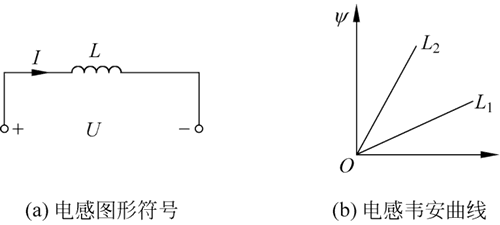
图 1 电感元件图形符号与韦安曲线
图 1 电感元件图形符号与韦安曲线
在理想情况下，一般认为电感具有以下特性：在没有非线性导磁物质存在的条件下，一个载流线圈的磁通链 Ψ（或磁通 ϕ ）与线圈中的电流 I 成正比，即：
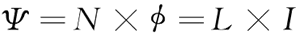
式中，N 为电感元件绕制的线圈匝数；L 为电感元件的参数，称为电感元件的电感值。由于单个线圈中磁通链是由线圈本身的电流产生的。因此电感值也称自感系数，单位为 H（亨利，简称亨）。在实际应用中常用单位是 mH（毫亨）、μH（微亨）和 nH（纳亨）。以 Ψ 和 I 作为坐标轴可以画出电感的韦安曲线，如图 1b) 所示，线性电感的韦安曲线是过原点的直线。
由于在实际应用中，磁通链是很难测量的，因此需要确定电感两端电压与电流的关系。由电磁感应定律可知，电与磁之间是可以相互转换的。当磁通链 Ψ 随时间变化时，在线圈的端子间会产生感应电压，其关系为：
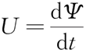
结合上面两个公式可得，线圈两端电压与流过电流之间的关系为：
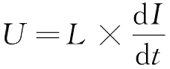
上式表明电感两端电压与流过的电流成正比。相反地，也可以根据电感两端的电压求解流过的电流：
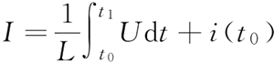
因此，可以看出，电感与电容一样，也是一种有“记忆”的元件。电感能将能量以磁场的形式进行存储。一个理想的电感吸收的功率为：
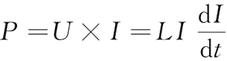
则电感从 t0 时刻到 t1 时刻吸收的能量为：
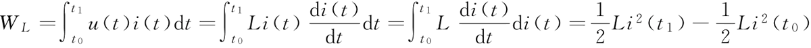
如初始时刻 t0 电感的能量为 0，那么在 t 时刻电感吸收能量可以写为：
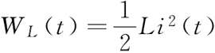
假如在电感两端通入正弦交流电流，即 I=Imsinωt，电感两端电压 U 为：
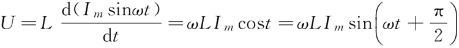
其中，Im 为正弦波形的幅值，当角频率 ω=1、电感 L=1H 且赋值 Im=1A 的条件下，可求得：
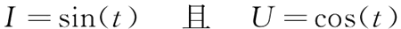
则流过电感电流 I 与电感两端电压 U 关于时间 t 的波形如图 2 所示。
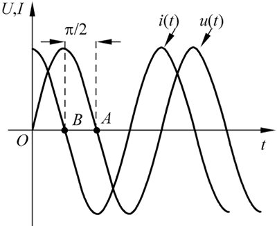
图 2 流过电感的电流与两端电压的波形
图 2 流过电感的电流与两端电压的波形
可以看出，流过电感电流 I 超前电感两端电压 U，相位相差 90°。正好与电容的电压与电流的相位关系相反。
绕制电感
如前所述，在电阻、电容、电感的组合电路中可以根据电阻值、电容值、电感值的任意组合来改变输入电压与电流之间的相位关系。因此在实际应用中往往需要使用不同的电感值。与电阻、电容一样，通常实际生产的标准电感的电感值也是有限的，其实物图如图 3a) 所示，当然也可以电感通过串、并联的方式得到任意的等效电感值。两个互相没有影响的电感串、并联后的等效电感的计算公式与电阻类似。
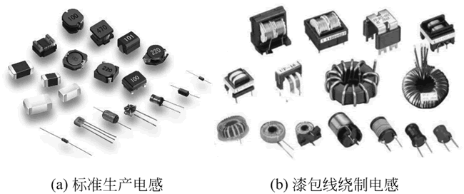
图 3 电感实物
图 3 电感实物
但在实际应用中很少使用此方式得到非标的电感，而是在磁芯表面缠绕漆包线来得到电感，通过漆包线围绕磁芯匝数来改变其电感值，实物图如图3b) 所示。
实际绕制电感的过程中，有以下几点注意事项：
- 根据电流选择线径。一般选择铜芯的漆包线绕制线圈，铜线会随着绕线的匝数变多而变大，当通过线圈的电流很大时，容易发热甚至烧断。因此需要根据电流大小合理选择绕线的线径。
- 不同频率选取不同材质的磁芯。工作频率不同的线圈，具有不同的特点。低频用铁氧体作为磁芯材料。在音频段的电感线圈，通常采用硅钢片或者钼坡莫合金作为磁芯材料。在高频通常采用铁硅铝或铁氧体作为磁芯材料。在频率高于 100MHz 时一般不再采用铁硅铝或铁氧体，而是使用空心线圈；如果作为微调，可用铜芯。
- 根据功率选择磁芯尺寸。对于同种材料的磁芯来说，通常磁芯的尺寸与功率有关，功率越大，所需磁芯尺寸越大。
关注公众号「站长严长生」，在手机上阅读所有教程，随时随地都能学习。内含一款搜索神器，免费下载全网书籍和视频。

微信扫码关注公众号